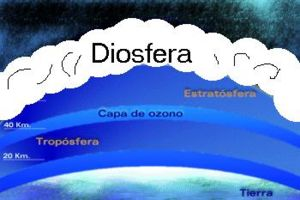

Diosfera
 De: La Frikipedia, la enciclopedia extremadamente seria.
De: La Frikipedia, la enciclopedia extremadamente seria.
Propiamente conocido como Diosfera, es el lugar a donde van las personas cuando mueren si se portan bien en vida. Su naturaleza depende de la religión del difunto. Está ubicado después de la Estratosfera y antes de la Capa de Ozono. La única forma de entrar es en forma de fantasmita, como los que salen en las caricaturas después de morirse o las almas del camino de la serpiente de dragon ball. Dios vive ahí en su templo de tortura tierra prometida.
El Cielo Según Diferentes Religiones
 Profecional dibujo hecho por mi tortuga para
rellenar observar el cielo.
- Según la religión pastafari, en el cielo hay una fábrica de stripters y un volcán de cerveza. Este supuesto se considera inapropiado porque nadie ha regresado de la muerte (debido a lo bien que se lo pasa todo el mundo ahí).
- Según los católicos, el cielo es un anuncio de compresas o de queso de untar, donde seres afeminados tocan el arpa sobre las nubes, un ser con pañal al que llaman Jesús habita a sus anchas y un ser imaginario como dios corre libre por los campos de trigo donde nace el Chocapic.
- Según el culto de la Agnostica el cielo está poblado por tías buenas ninfómanas, las chelas cuestan exactamente 0; No existen los políticos y todo el mundo es vago (y es remunerado por serlo).
- Según los frikipedistas es un cuarto de hotel 5 estrellas con una tele con todos los canales y minibar gratis en el que cientos de mujeres están a tu plena disposición (La visión del cielo puede variar según el usuario).
- Según el budismo es un sushi bar con arroz ilimitado y salsa de soja gratis.
- Según los La fuerza), lo que hace que puedan explotar las cabezas de los debiles mentales.
- Según alguien es una extensa y basta faja de
tierra nada.
El Cielo Según el Ateismo
Cielo de cualquier religion.
Para los ateos el cielo no existe. Estos degenerados cultos seres tienen el IQ para negar la existencia de Dios, creen que el fantasmita que sale de tu cuerpo cuando te mueres se queda vagando por la Capa de Ozono, escondiendose en los closets de los niños para asustarlos (Nótese que en algun momento tendrian que salir del closet), se intercambian por figuritas de pokemon o simplemente no existen cosas así. Se recomienda no tomar muy en serio a estas personas sin valores, ética, ni moral (la persona que antes había escrito ese texto hoy esta en la Diosfera).
Se considera a los Ateos unos amargados que, al ver que su alma no alcanzaría de ninguna forma el cielo, simplemente comenzaron a decir cosas contra Diox para no estar solos en el infierno y así no dedicarse a ser rostizados por toda la eternidad...
El cielo según versión popular
Es azul, tiene cosas blancas como malvaviscos y a veces se pone negro y arroja un liquido altamente venenoso, también llamado hagua (enemigo natural de todo jebi adicto al alcohol).
Muchos dicen que ni siquiera existe.
Personas que irán al cielo
Notesé que ellas serian las mujeres más feas del cielo.
- El chavo del ocho
- Pepe grillo
- Yo
- Tu
- Toda mujer bella (no importa lo malo que halla sido en vida, si tiene buen cuerpo se va al cielo y se pone ninfómana).
Personas que NO irán al cielo
- Todo aquel que escuche la mierda del reggaeton
- Todo aquel que admire a daddy yankee
- Todo aquel que sea Pokemon
- Todo aquel que sea Flogger
- Todo aquel que sea virgen
- Todo aquel que sea friki
- Michael Jackson(no por ser malo es que se ira haciendo el moonwalker hasta el varhala)
- Cumbio(POR ANDROGINO)
- Todo aquel que quiera que los demas sepan sobre su
mierda de musica.
- ADVERTENCIA: todo aquel que NO cumpla con la ultima lista sera violado por Satán y su castigo final sera ser violado por prostitutas con miembro masculino.
Autor(es):
- Kenedhor
- Toxie
- Huds
- Roms
- Azulejos
- Nadaquever
- El charro
- Zay dragons
- Frriki snake
- Chaos control
Frikipedia 2005-2016, Licencia
GFDL 1.2 - Extraído por FrikiLeaks